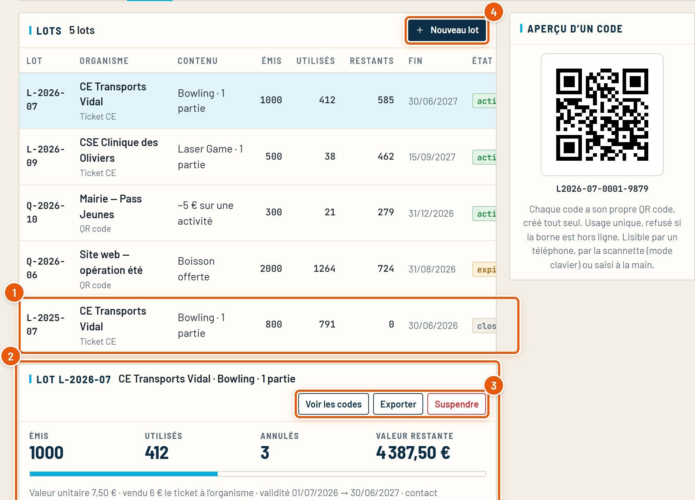
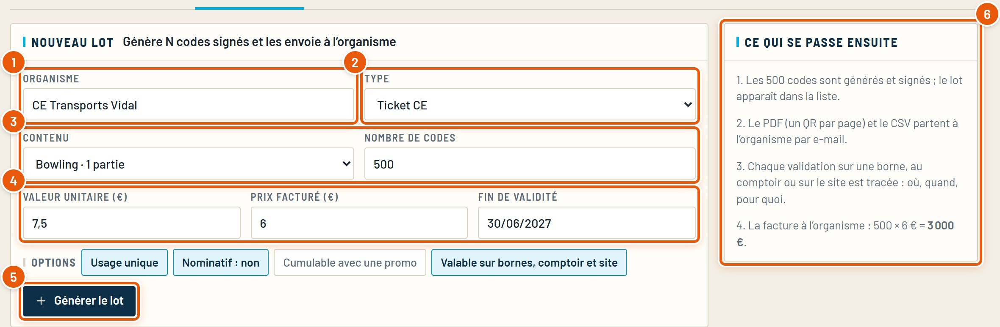
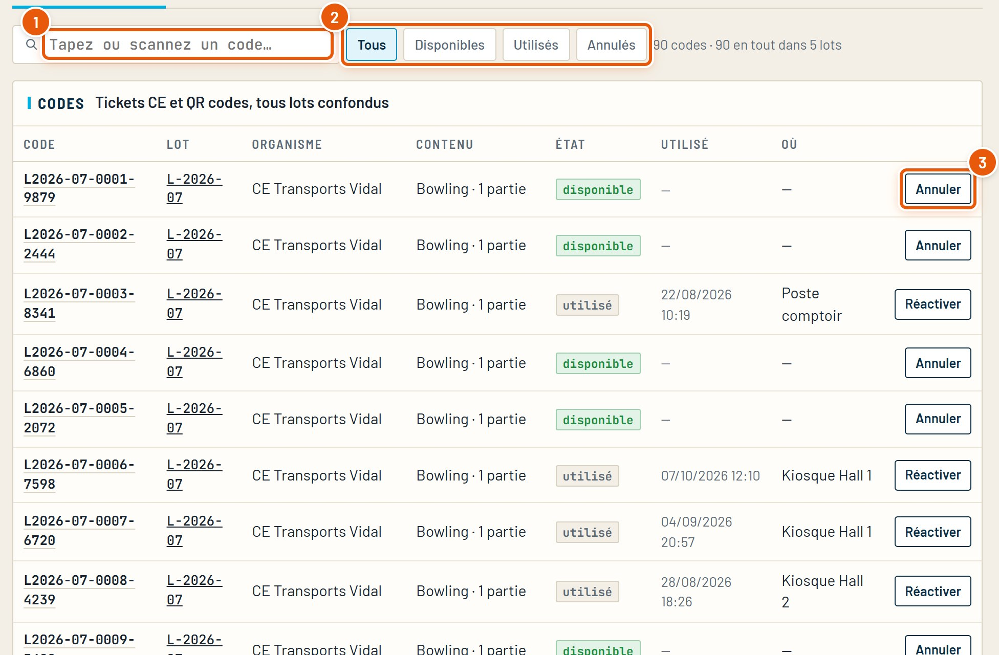
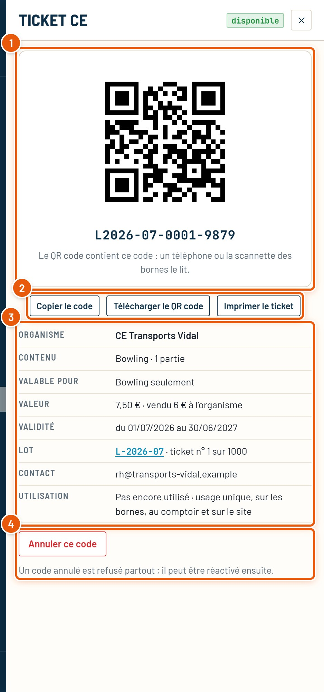
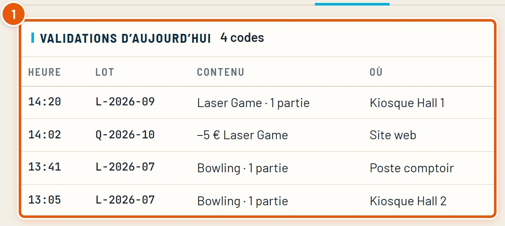
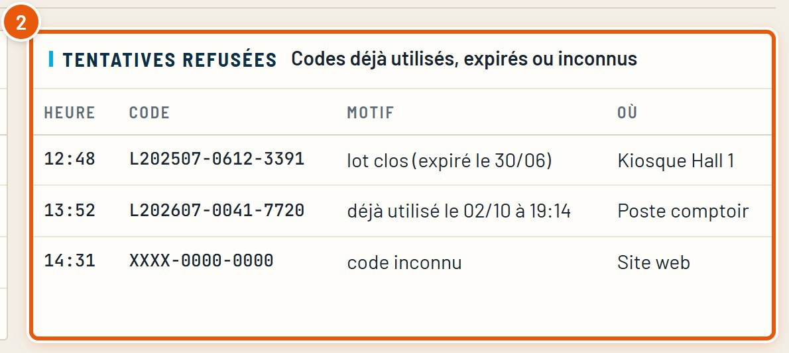
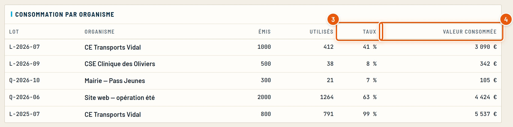
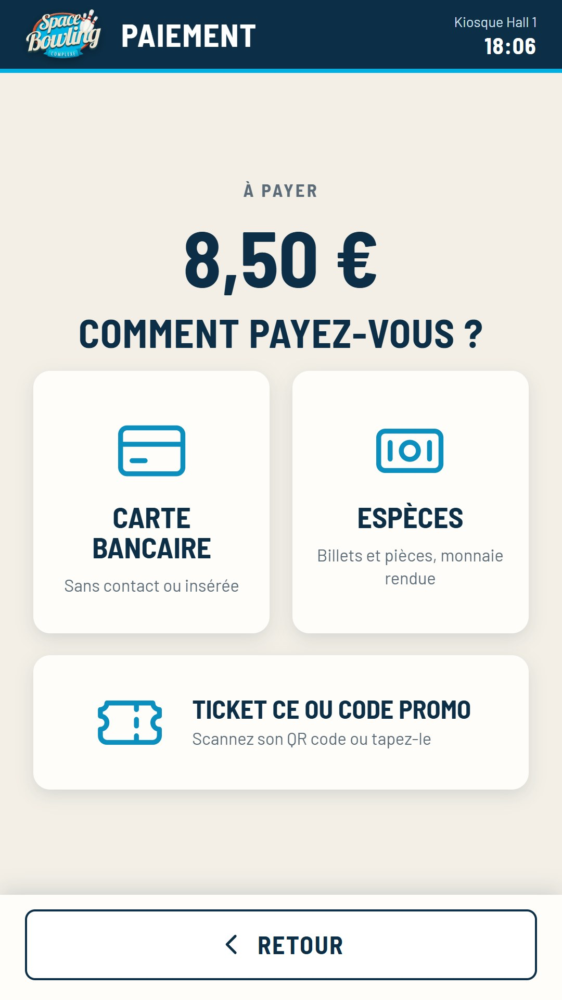
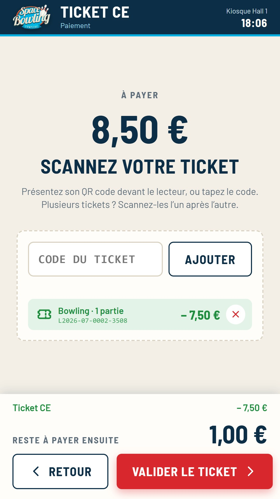

Guide détaillé
Tickets CE et QR codes
Créer un lot de codes pour un comité d’entreprise ou un partenaire, retrouver un code, l’annuler, et suivre leur utilisation sur les bornes, le site et au comptoir.
Octobre 2026SpaceBowling Engine
Guide détaillé
Créer un lot de codes pour un comité d’entreprise ou un partenaire, retrouver un code, l’annuler, et suivre leur utilisation sur les bornes, le site et au comptoir.
Un organisme (comité d’entreprise, mairie, partenaire) achète un lot de tickets, par exemple 1 000 parties de bowling. Le CRM génère les codes, on les lui envoie, et chaque code est suivi jusqu’à son utilisation.
Ce qu’il faut regarder est entouré en orange et numéroté. Menu Centre › Tickets CE / QR codes.
Onglet Lots. Un lot = un organisme, un contenu, un nombre de codes et une date de fin.

Onglet Créer un lot (ou « Nouveau lot »). Le CRM génère les codes, signés et à usage unique.

Chaque code a son propre QR code, créé tout seul : rien à faire.
Chaque code est signé et à usage unique : une fois utilisé, il est refusé partout. Il est aussi refusé sur une borne sans réseau (il ne peut pas être vérifié).
Onglet Liste des codes : tous les codes, tous lots confondus. Un clic sur une ligne ouvre la fiche du code.

Pour un code utilisé, la liste indique quand et où (quelle borne, le site, le comptoir). Un clic sur la ligne ouvre sa fiche, à droite :

Onglet Suivi : ce qui a été validé aujourd’hui, les tentatives refusées, et la consommation de chaque organisme.



Sur les bornes, le ticket CE est un moyen de paiement, comme la carte et les espèces.


| Où | Comment |
|---|---|
| Borne, toutes les activités et le bar | Au moment de payer, tuile « Ticket CE ou code promo » : le client scanne le QR code (ou tape le code), un ou plusieurs tickets, puis « Valider ». Ce qui reste se paie ensuite par carte ou en espèces. Avec « Payer une partie », il paie par exemple 2 joueurs sur 4 avec 2 tickets, le reste par carte. Au récapitulatif, une ligne le prévient. |
| Site | Au récapitulatif, bloc « Code promo / Ticket CE ». |
| Comptoir | L’équipe scanne ou tape le code. |
Un code ne sert que pour l’activité de son lot : un ticket « Bowling · 1 partie » est refusé au laser. « −5 € sur une activité » vaut partout, « Boisson offerte » au bar.
Sur la borne, les tickets sont consommés quand le client touche « Valider ». S’il part sans payer le reste, la commande est abandonnée et ses tickets redeviennent disponibles.
Un ticket couvre au plus ce qui reste à payer : la différence n’est pas rendue (la borne le signale avant de valider).
Les cas les plus courants, et où regarder.
| Le client voit… | À vérifier |
|---|---|
| « Code déjà utilisé » | Liste des codes : quand et où il a servi. Réactivez-le s’il a été utilisé par erreur. |
| « Code expiré » ou « lot clos » | La date de fin et l’état du lot. |
| « Code inconnu » | Une faute de frappe (lettres et chiffres), ou un code d’un autre centre. |
| « Pas de réseau » | La borne ne peut pas vérifier le code : réessayer au retour du réseau, ou au comptoir. |
| « Ce code est valable seulement pour … » | Le code est réservé à l’activité de son lot (sa fiche, ligne « Valable pour ») : un ticket bowling ne paie pas le laser. |
Tous les guides du CRM, refaits à partir du vrai logiciel. Ils se trouvent dans le dossier docs.